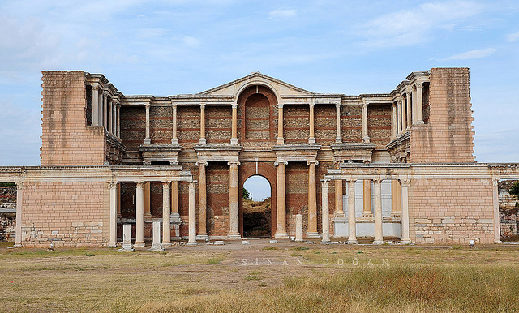
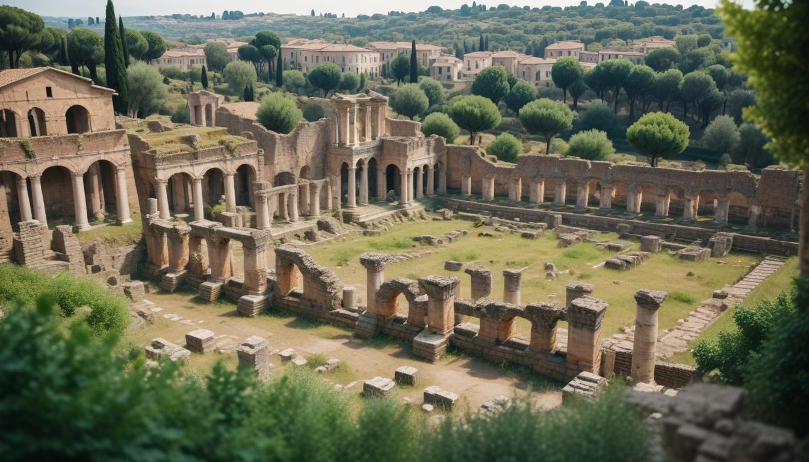
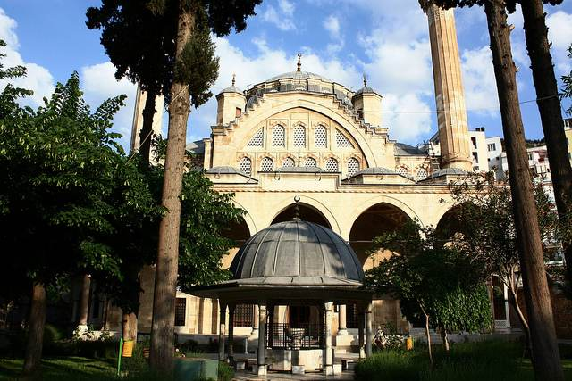
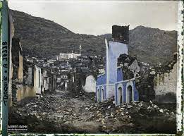
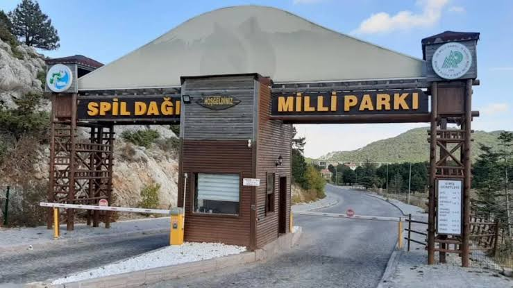

Sardes Antik Kenti
Sardes, Lidya Krallığı'nın başkenti olup tarihte ilk madeni paranın basıldığı yerdir. Salihli'de yer alan bu antik kent, Roma ve Bizans dönemlerinde de önemini korumuştur. Lidya'nın en parlak dönemlerinde, Sardes Antik Kenti, bölgesel bir ticaret merkezi olarak önemli bir yer tutmuştur.
Sardes, sadece ticaret açısından değil, aynı zamanda kültürel açıdan da büyük bir öneme sahiptir. Bugün, antik kentteki kazılar, Lidya dönemine ait pek çok eseri gün yüzüne çıkarmıştır. Ayrıca, bu bölgede Lidyalıların zengin kültürel mirası ve yaşam tarzlarına dair önemli izler bulunmaktadır.

Roma Kalıntıları
Manisa, Roma döneminde büyük altyapı yatırımları almış; tiyatrolar, su kemerleri, yollar ve hamamlarla donatılmıştır. Roma İmparatorluğu'nun etkisiyle bölgedeki şehirler daha düzenli hale gelmiş ve büyümüştür. Manisa'daki Roma kalıntıları, şehrin o dönemdeki zenginliğini ve kültürel çeşitliliğini göstermektedir.
Bu kalıntılar arasında özellikle Roma dönemi tiyatroları dikkat çekmektedir. Büyük ölçekli yapıları, akustik özellikleri ve mimari detaylarıyla Roma'nın inşaat mühendisliğini yansıtmaktadır. Ayrıca, su kemerleri, şehre su taşınmasını sağlamak için oldukça ileri bir mühendislik anlayışını temsil etmektedir.

Muradiye Camii
Osmanlı padişahlarının sancak beyliği yaptığı Manisa’da inşa edilen Muradiye Camii, Mimar Sinan’ın öğrencisi Sedefkâr Mehmed Ağa tarafından yapılmıştır. Osmanlı İmparatorluğu'nun zengin kültürel mirasına dair en güzel örneklerden biri olan bu cami, geleneksel Osmanlı mimarisinin zarif detaylarını taşır.
Camii, Manisa'nın en önemli dini yapılarından biri olup, hala yerli ve yabancı turistlerin ilgisini çekmektedir. Cami içindeki süslemeler, çini işler ve minaresi, dönemin sanatını en iyi şekilde yansıtmaktadır. Muradiye Camii, Manisa’nın Osmanlı dönemindeki önemli dini ve kültürel yapılarından biridir.

1922 Manisa Yangını
Yunan işgali sırasında çıkan büyük yangın, Manisa'nın tarihi dokusuna büyük zarar vermiştir. 1922'de çıkan bu yangın, birçok eski yapının yok olmasına sebep olmuş, şehir büyük bir felaket yaşamıştır. Ancak, Manisa halkının kararlılığı ve toplumsal dayanışma ile şehir hızla toparlanmış ve yeniden inşa edilmiştir.
Manisa'nın o dönemdeki eski yapılarının kaybı, şehrin kültürel mirasını derinden etkilemiştir. Fakat yangından sonra gerçekleştirilen restorasyon çalışmaları, Manisa'nın tarihî dokusunun yeniden canlanmasını sağlamıştır. Bu yangın, Manisa halkı için bir dönüm noktası olmuş ve şehrin yeniden yapılanmasına olanak tanımıştır.

Spil Dağı Milli Parkı
Spil Dağı, Manisa'nın doğal güzelliklerinin en güzel örneklerinden birini sunar. Dağ, mitolojik olarak Amazonların yaşadığı yer olarak kabul edilir ve Niobe'nin kayalarla taşlanması efsanesiyle de tanınır. Doğal zenginlikleri, dağcılar ve doğa severler için büyük bir cazibe merkezidir.
Spil Dağı, aynı zamanda farklı fauna ve floraya sahip bir milli park olup, çok sayıda nadir bitki türüne ve yaban hayatına ev sahipliği yapmaktadır. Spil Dağı’nda yapılan doğa yürüyüşleri, dağcılık ve kamp aktiviteleri, hem yerli hem de yabancı turistlerin ilgisini çekmektedir.